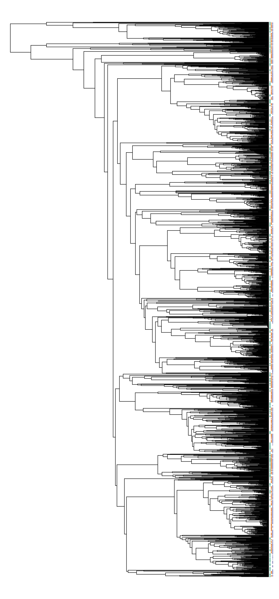

../../../vignettes/community-analysis.Rmd
community-analysis.RmdHere’s a quick example to show how we could use the fishtree package to conduct some phylogenetic community analyses. First, we load fishtree and ensure that the other packages that we need are installed.
library(ape) library(fishtree) requireNamespace("rfishbase") #> Loading required namespace: rfishbase requireNamespace("picante") #> Loading required namespace: picante requireNamespace("geiger") #> Loading required namespace: geiger
Next we’ll start downloading some data from rfishbase. We’ll be seeing if reef-associated ray-finned fish species are clustered or overdispersed in the Atlantic, Pacific, and Indian Oceans.
# Get reef-associated species from the `species` table reef_species <- rfishbase::species(fields = c("Species", "DemersPelag")) reef_species <- reef_species[reef_species$DemersPelag == "reef-associated", ] # Get native and endemic species from the Atlantic, Pacific, and Indian Oceans eco <- rfishbase::ecosystem(species_list = reef_species$Species) #> Warning: `data_frame()` is deprecated as of tibble 1.1.0. #> Please use `tibble()` instead. #> This warning is displayed once every 8 hours. #> Call `lifecycle::last_warnings()` to see where this warning was generated. valid_idx <- eco$Status %in% c("native", "endemic") & eco$EcosystemName %in% c("Atlantic Ocean", "Pacific Ocean", "Indian Ocean") eco <- eco[valid_idx, c("Species", "EcosystemName")] # Retrieve the phylogeny of only native reef species across all three oceans. phy <- fishtree_phylogeny(species = eco$Species) #> Warning: Requested 5813 but only found 3961 species. #> * Conger esculentus #> * Lutjanus guttatus #> * Lutjanus inermis #> * Lutjanus jordani #> * Lutjanus lemniscatus #> * ...and 1847 others
We’ll have to clean up the data in a few ways before sending it to picante for analysis. First, we’ll need to convert our species-by-site data frame into a presence-absence matrix. We’ll use base::table for this, and use unclass to convert the table into a standard matrix object.
sample_matrix <- unclass(table(eco)) dimnames(sample_matrix)$Species <- gsub(" ", "_", dimnames(sample_matrix)$Species, fixed = TRUE)
Next, we’ll use geiger::name.check to ensure the tip labels of the phylogeny and the rows of the data matrix match each other.
nc <- geiger::name.check(phy, sample_matrix) sample_matrix <- sample_matrix[!rownames(sample_matrix) %in% nc$data_not_tree, ]
Finally, we’ll generate the cophenetic matrix based on the phylogeny, and transpose the presence-absence matrix since picante likes its columns to be species and its rows to be sites.
cophen <- cophenetic(phy) sample_matrix <- t(sample_matrix)
We’ll run ses.mpd and ses.mntd with only 100 iterations, to speed up the analysis. For a real analysis you would likely increase this to 1000, and possibly test other null models if your datasets have e.g., abundance information.
picante::ses.mpd(sample_matrix, cophen, null.model = "taxa.labels", runs = 99) #> ntaxa mpd.obs mpd.rand.mean mpd.rand.sd mpd.obs.rank mpd.obs.z #> Atlantic Ocean 623 238.1682 231.7370 1.996871 100 3.22063772 #> Indian Ocean 1213 233.1537 231.7258 1.255041 89 1.13770597 #> Pacific Ocean 1497 231.6829 231.6278 1.049835 57 0.05241096 #> mpd.obs.p runs #> Atlantic Ocean 1.00 99 #> Indian Ocean 0.89 99 #> Pacific Ocean 0.57 99 picante::ses.mntd(sample_matrix, cophen, null.model = "taxa.labels", runs = 99) #> ntaxa mntd.obs mntd.rand.mean mntd.rand.sd mntd.obs.rank #> Atlantic Ocean 623 41.86956 48.25992 1.4150248 1 #> Indian Ocean 1213 34.99129 37.99293 0.6762540 1 #> Pacific Ocean 1497 34.08644 35.12554 0.5386798 4 #> mntd.obs.z mntd.obs.p runs #> Atlantic Ocean -4.516075 0.01 99 #> Indian Ocean -4.438631 0.01 99 #> Pacific Ocean -1.928984 0.04 99
The Atlantic and Indian Oceans are overdispersed using the MPD metric, and all three oceans are clustered under the MNTD metric. MPD is thought to be more sensitive to patterns closer to the root of the tree, while MNTD is thought to more closely reflect patterns towards the tips of the phylogeny. We can confirm these patterns visually:
plot(phy, show.tip.label = FALSE, no.margin = TRUE) obj <- get("last_plot.phylo", .PlotPhyloEnv) matr <- t(sample_matrix)[phy$tip.label, ] xx <- obj$xx[1:obj$Ntip] yy <- obj$yy[1:obj$Ntip] cols <- c("#1b9e77", "#d95f02", "#7570b3") for (ii in 1:ncol(matr)) { present_idx <- matr[, ii] == 1 points(xx[present_idx] + ii, yy[present_idx], col = cols[ii], cex = 0.1) }
